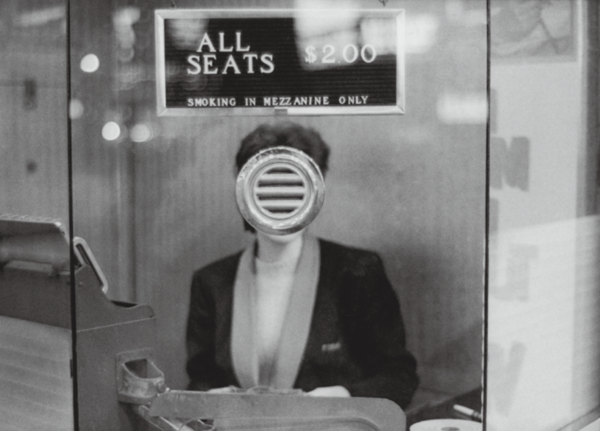

Now in its third edition, Jimei–Arles brings Les Rencontres d’Arles into Xiamen and produces new frictions and translations with local Chinese photography—through a de-centered exhibition structure, cross-media practices, and a renewed humanistic turn.

Reported from Xiamen. This article observes how Jimei–Arles negotiates East–West curatorial frameworks, and how contemporary Chinese photographers respond through what is described as an “anti-photography” stance.
Excerpt 1: From Arles to Xiamen — a transplanted festival and a de-centered structure
The Jimei–Arles International Photo Festival, currently on view in Xiamen, has entered its third edition. Les Rencontres d’Arles—the global photography event with a 47-year history—has, from Arles to Xiamen, generated increasing “collisions” with Chinese local photography. Running through January 3, 2018, this edition presents 40 exhibitions across six sections: in addition to the Jimei–Arles Discovery Award, there are eight “Arles in Xiamen” exhibitions selected from the 2017 Arles program; a solo show of Chinese photography master Wang Wusheng curated by RongRong and Inri; three exhibitions under “Chinese Rhythm”; an “Imageless Boundaries” project titled “Phantom Pain Clinic”; and six “Local Actions” projects focusing on Xiamen-based curators and artists. This de-centered presentation of 40 exhibitions retains Arles’ own sections while inviting more Chinese curators to participate, forming a closer relationship with what is happening in China today. As Sam Stourdzé—the president of Les Rencontres d’Arles and co-initiator of Jimei–Arles—put it: “Among the 40 exhibitions this year, apart from eight, all the others are designed specifically for Chinese audiences.” These eight projects, selected annually from the Arles program, not only keep the platform high-level after being “transplanted” onto the soil of Xiamen, but also bring Chinese audiences the most forward-looking photographic developments. Stourdzé noted that “these eight exhibitions, as a whole, can express the impressions conveyed by European and Western photographic art,” and he hoped they would serve as an opportunity for “a collision” between Eastern and Western art.
Excerpt 2: “Opening a door” — the city, the festival, and an “anti-photography” stance
“The festival helps us open a door,” said RongRong, co-initiator of Jimei–Arles and a leading figure in Chinese contemporary photography, in an interview with The Art Newspaper China. “For a city’s development, livability is one aspect; culture is the more important one. We hope to learn from advanced cities like Paris and London, and to attract visitors from across Asia to the festival—to Jimei.” Entering only its third year, Jimei–Arles is young compared with Les Rencontres d’Arles—an energy echoed in the Chinese photographers showcased this year: youthful, vibrant, and offering new perspectives. Guo Yingguang, winner of the Jimei–Arles–Madame Figaro Women Photographers Award, drew the jury’s attention with her conceptual series “Obedient Happiness,” which depicts non-intimate relationships within Chinese marriages. With Chinese parents’ excessive concern and intervention in their children’s marriages, phenomena such as the “marriage market” in Shanghai’s People’s Park have emerged; Guo records this with a delicate visual language. Wang Huangsheng—festival advisor and a member of this year’s jury—also noted an especially intriguing feature of the exhibition: many Chinese curators and artists reveal a “anti-photography” stance. Through reflecting on photography itself, they attempt to break beyond conventional definitions and create new territories that traditional photography cannot express. This is not only because the new generation is more familiar with the technical production and circulation of images, but also because rapid social change has prompted photographers to pay closer attention to individual destinies and an open future.
Excerpt 3: Back to photography — new observation, new expression, and humanistic thinking
Even as new technologies and media continue to emerge and the ways we view the world keep changing, photography returns to its essence: what remains most compelling under the lens is still a renewed observation of things, an expression of the new, and a humanistic mode of thinking. This may also be the most unforgettable part of this edition of Jimei–Arles. Yet as Stourdzé put it, “Jimei–Arles has only just begun, and it is still difficult to define its development. But in the future we will continue to introduce new thinking and new elements.”